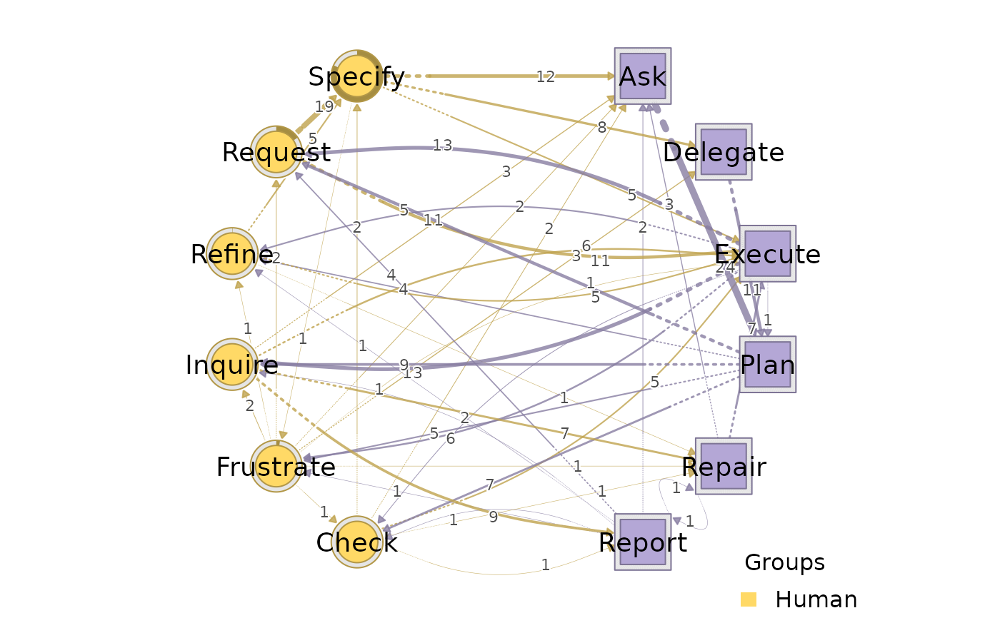

Computes the edge betweenness of every existing edge in an htna
network and returns a copy whose $weights slot stores those
betweenness scores instead of the original transition weights. The
actor partition is preserved, so the result can be plotted with
plot_htna() to visualise which edges carry the most shortest-path
traffic.
Arguments
- x
An htna network from
build_htna().- directed
If
TRUE(default), shortest paths follow edge direction.- invert
If
TRUE(default), use1 / weightas the edge cost when computing shortest paths.
Value
A copy of x whose $weights matrix entries are
edge-betweenness scores at every position where the original
network had a non-zero transition. Class is
c("htna_edge_betweenness", class(x)).
Details
Mirrors tna::betweenness_network(): edge weights are inverted to
costs by default (invert = TRUE) – in transition networks a
larger transition probability means the edge is "easier" and so the
equivalent path cost is smaller.
See also
centralities_htna() for node-level centrality measures,
tna::betweenness_network() for the tna equivalent.
Examples
# \donttest{
data(human_ai)
net <- build_htna(human_ai, actor_type = "actor_type")
#> Warning: A network with one long sequence is not recommended and can't be validated using bootstrap and other confirmatory testings.
#> Metadata aggregated per session: ties resolved by first occurrence in 'session_date' (1 sessions), 'cluster' (42 sessions), 'actor_type' (24 sessions)
eb <- edge_betweenness_htna(net)
plot_htna(eb) # edge thickness = betweenness score

# }